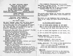
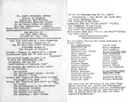

Home
/
Krehbiels
/
034 St. John Bulletins
034 St. John Bulletins
← Return to Krehbiels

kre034-760327
Mike and David played guitars on March 27, 1975.
Updated: 29 May 2006

kre034-761224
This bulletin shows that David was confirmed on Christmas Eve, 1976.
Updated: 29 May 2006
2 photos available in this directory.